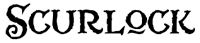

Adding Text to Your Logo:
Many logos are only comprised of text. With all of the options out there, I would suggest adding a bit more to your logo. However, if you choose a text-only design, go with a font that has some style. 
Macintosh and Windows computers each offer different fonts in Photoshop. There are also numerous fonts that can be found online if one of the texts provided doesn't suit your fancy. If you look, you can find many font sites that offer free downloads that are both Macintosh and Windows compatible. Some fonts can be a little crazy, so you may want to use one letter from an outrageous font, and the rest of the of the logo can be in a simpler font.
Like in any other program, Photoshop allows you to change certain elements of your font, including leading - line spacing - and kearning - the space between words. To do this, click on the character window - A| - on the right side of the screen. This will let you overlap letters or words, without creating different text boxes.
Once you have chosen your font and typed what you want your logo to say, you can change the colors of the letters. All of the letters can be the same colors or they can be different colors. To do this, highlight a letter of all of the font and click on the colored box at the top of the screen. This will pull up a window that will let you pick a color or type in a hexidecimal code.